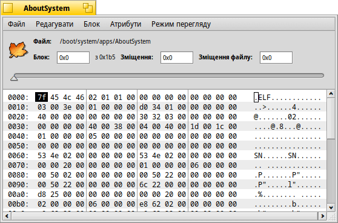
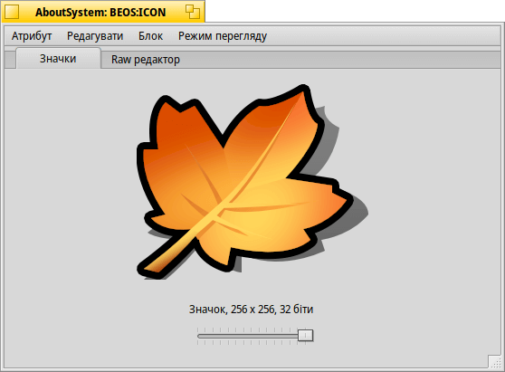

DiskProbe (HEX-редактор)
| Deskbar: | ||
| Розташування: | /boot/system/apps/DiskProbe | |
| Налаштування: | ~/config/settings/DiskProbe_data |
DiskProbe – це HEX-редактор для перегляду і зміни даних у файлі або на пристрої на байтовому рівні. Це дуже низькорівневий інструмент, і тому він може дійсно зіпсувати все, якщо Ви не будете обережні!
Під час запуску DiskProbe спочатку Вам буде запропоновано вказати файл або пристрій, з яким Ви хочете працювати. Після цього Ви побачите ось такий інтерфейс:

У головному вікні завжди відображається один блок даних, розмір якого можна вибрати за допомогою пункту меню . Зліва – зміщення від початку блока, посередині – дані у вигляді HEX-значень, а праворуч – у вигляді ASCII-символів.
Ви можете переходити від одного блока до іншого за допомогою повзунка вище або комбінації клавіш ALT ← і ALT → та переключатися між стовпчиками HEX і ASCII за допомогою клавіші TAB.
Пункт меню не тільки покаже вибір з різним порядком байтів (у шістнадцятковій або десятковій системі, яка встановлена через меню ), він також інтерпретує його як зміщення блока до якого Ви можете перейти. Пункт буде недоступним (позначений сірим кольором), якщо позиція знаходиться поза межами файлу/пристрою.
Це зручна функція, особливо для перегляду файлових систем, оскільки вони часто містять вказівники на інші блоки.
Якщо файл, який Ви переглядаєте містить атрибути, за допомогою меню можна відкрити будь-який з них у новому вікні DiskProbe. Ось атрибут BEOS:ICON програми Про цю систему (AboutSystem):

Залежно від типу атрибута відкриється додаткова вкладка відповідного редактора, окрім завжди присутньої вкладки редактора необроблених даних Raw Editor. Наприклад, редактор рядків і MIME-типів або засіб перегляду векторних значків.